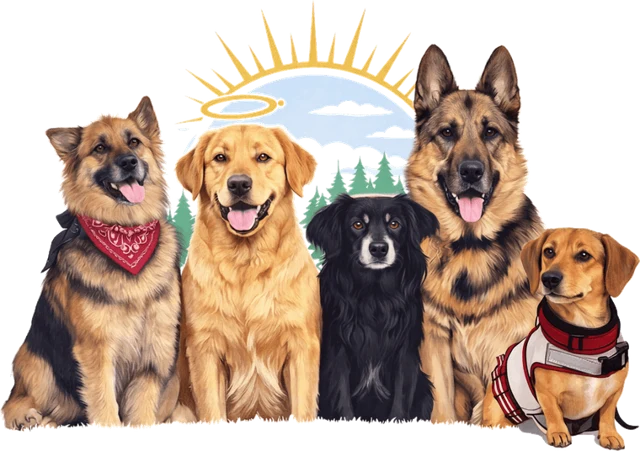

A new arrival.
The electric ambulance reached PFA Khamgaon, ready to carry injured and sick animals to treatment.
WITH GRATITUDE
For every life that deserves
a way to safety.
Some gifts don’t stand still.
They go where they’re needed.
Rosie’s Heroes gave PFA Khamgaon an electric animal rescue ambulance. Its name is Twix’s Hope on Wheels.
A way to reach injured and sick street animals. A way to bring them to treatment and care.
THE GIFTElectric rescue ambulance
THE PLACEPFA Khamgaon, Maharashtra
THE PARTNERRosie’s Heroes, California

To the people at Rosie’s Heroes who made this possible. Thank you for giving the animals of Khamgaon a new way to reach care.
A volunteer-run charity in Livermore, California,
working with rescues in India for street dogs.
The electric ambulance reached PFA Khamgaon, ready to carry injured and sick animals to treatment.
Inauguration and puja, with officers of the Animal Husbandry Department invited.
With gratitude,
People for Animals.